Sai
Sai · Aomori
Sai
Highlighted on the Aomori map.
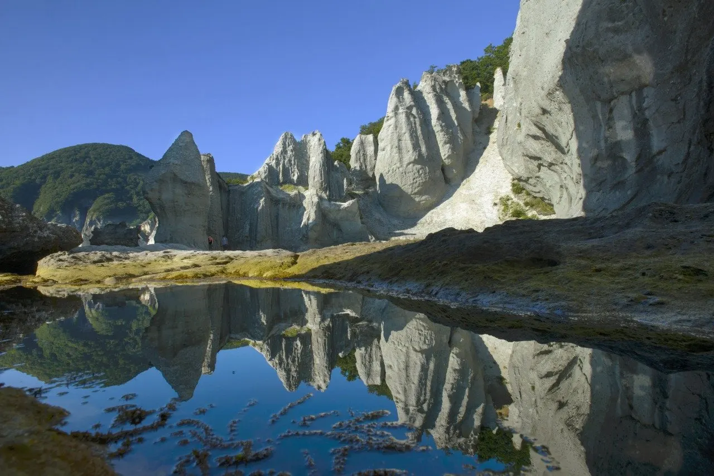
Stay
民宿 みやの
Minshuku Miyano
Guesthouse (minshuku) in Sai, Aomori.
民宿 芳栄丸
Minshuku Hoeimaru
Guesthouse (minshuku) in Sai, Aomori.
田中旅館
Tanaka Ryokan
Ryokan inn in Sai, Aomori.
民宿 なみえ荘
Minshuku Namieso
Guesthouse (minshuku) in Sai, Aomori.
民宿 ゆづき荘
Minshuku Yuzukiso
Guesthouse (minshuku) in Sai, Aomori.
民宿 福寿荘
Minshuku Fukujuso
Guesthouse (minshuku) in Sai, Aomori.
Dining
潮風
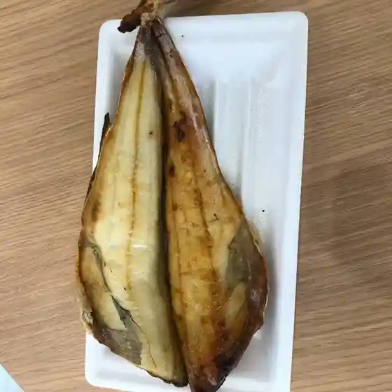
Shiokaze
手づくりマート
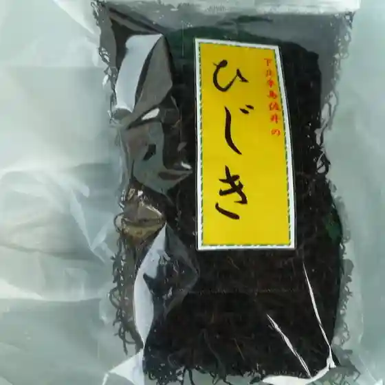
Tezu Kuri Maato
おにぎり・惣菜コーナー
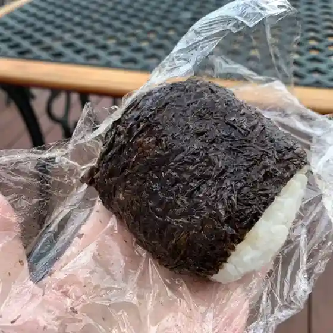
Onigiri Souzai Koonaa
菓子工房 彩菓
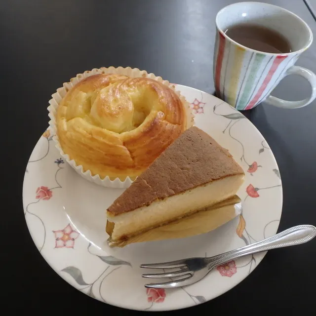
Kashi Koubou Sai Ka
Food Corner ちょこっと
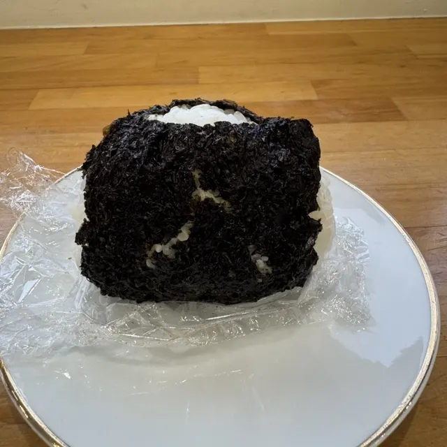
Food Corner Chokotto
スーバニア・ハウス
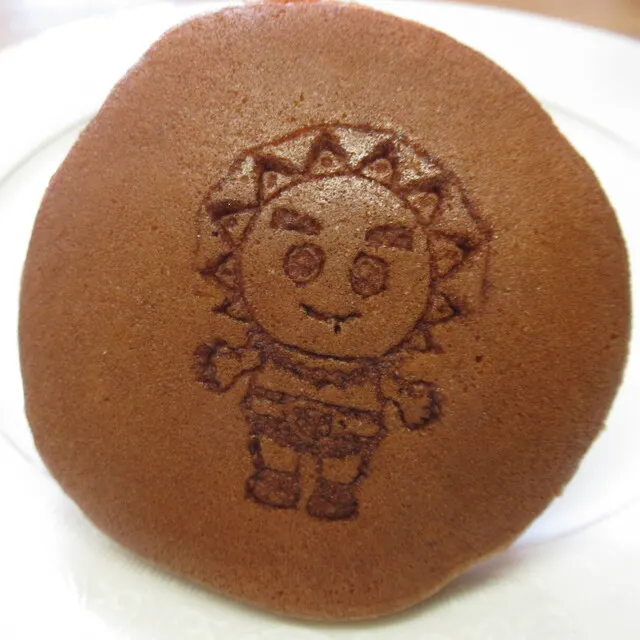
Suubania Hausu
仏ヶ浦ドライブイン
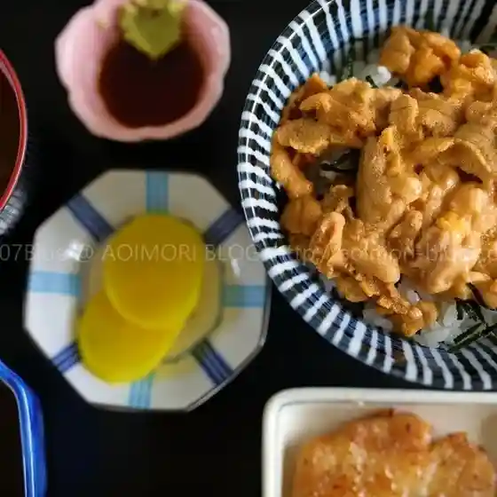
Hotoke Ke Ura Doraibuin
南華飯店
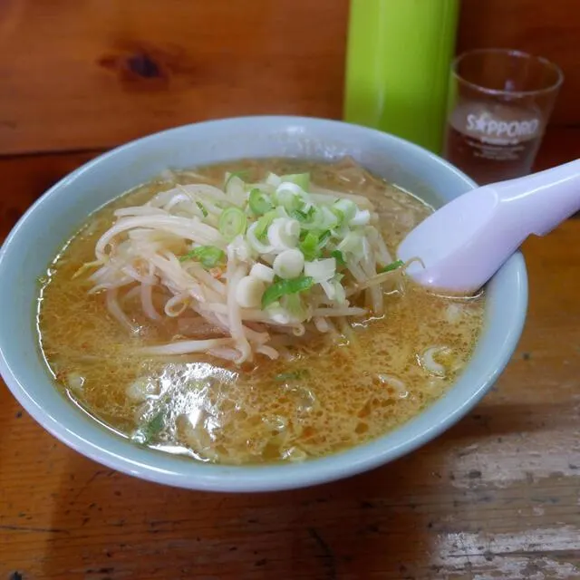
Minami Hana Hanten
cafeいおり
Cafe Iori
津軽海峡文化館アルサス しおさいホール
Tsugarukaikyou Bunka Kan Arusasu Shiosai Hooru
まんじゅや
Manjuya
なみえ荘
Namie Sou
牛滝まだぁ～る 海の駅
Ushitaki Madaa ~ Ru Umi No Eki
田中旅館
Tanaka Ryokan
喫茶店ポピーズ
Kissaten Popiizu
福寿荘
Fukuju Sou
ゆづき荘
Yuzuki Sou
民宿 みやの
Minshuku Miyano
レストいそ川
Resuto Iso Kawa
ぬいどう食堂
Nuidou Shokudou
民宿 芳栄丸
Minshuku Yoshie Maru
はなまる
Hanamaru
まるた旅館
Maruta Ryokan
道
Michi
Sights
Hotokegaura
Nearly 20 million years ago, deep sea volcanic activity created a precipice of green volcanic tuff around the current village of Sai in the Shimokita peninsula.
“Arusas” – Tsugaru Kaikyo Cultural Center
Terminal for Hotokegaura-bound sightseeing ships and Aomori-bound passenger ships
Mt. Nuidoishi
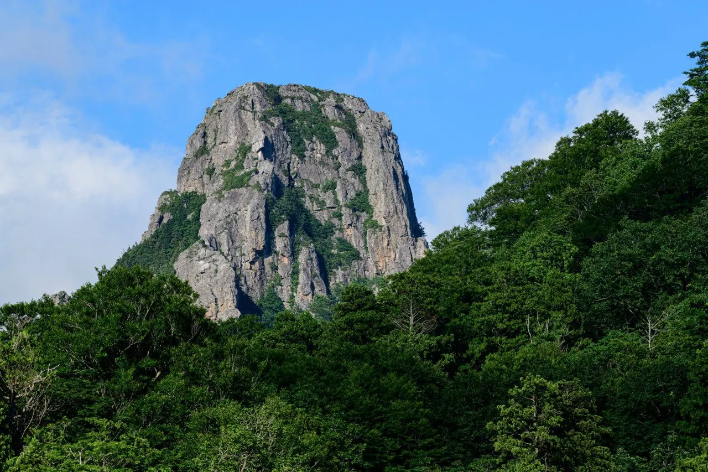
626 m rock peak rising from Shimokita's primeval forest, a natural monument for its rare plants.
Sai Village Kaikyo Museum
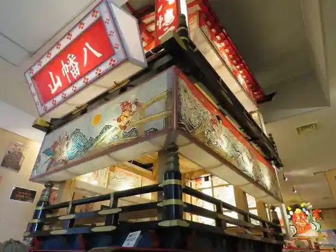
Honshu's northernmost museum, with a float model from the Yanemori Hachimangu festival and local excavated finds.
Gankake Rocks
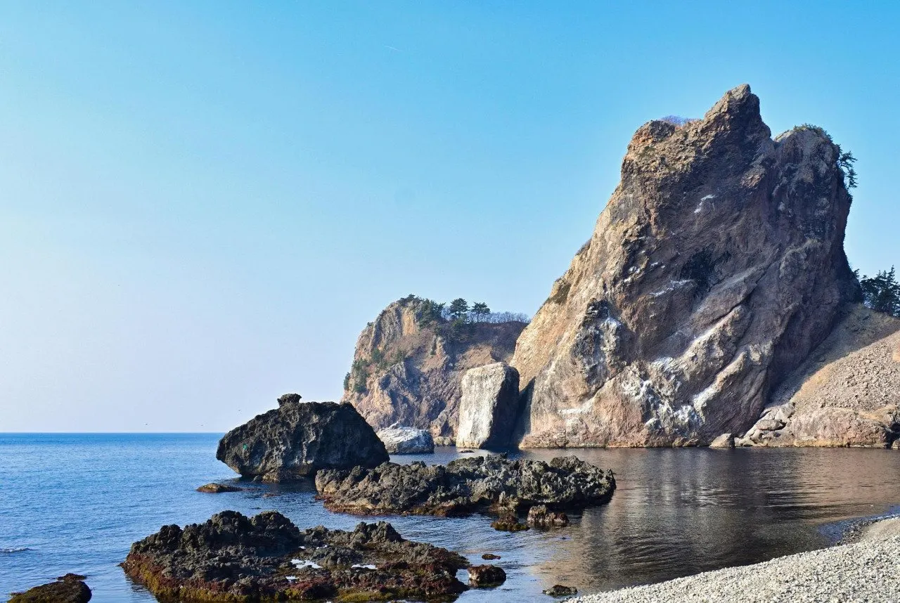
Pair of 100 m rocks, the "man rock" and "woman rock", beside Route 338.
Gankake Park Campground and Cabins
Campground and hiba-wood cabins at Gankake Park on Cape Yagoshi.
Mikami Gotaro Birthplace
Birthplace of the Sai-born doctor who flew a hand-sewn Red Cross flag and treated wounded of both sides in 1905.
Cape Tsubanazaki
Scenic cape on the Oma-Sai border with towering columnar "Zaimoku-iwa" rocks.